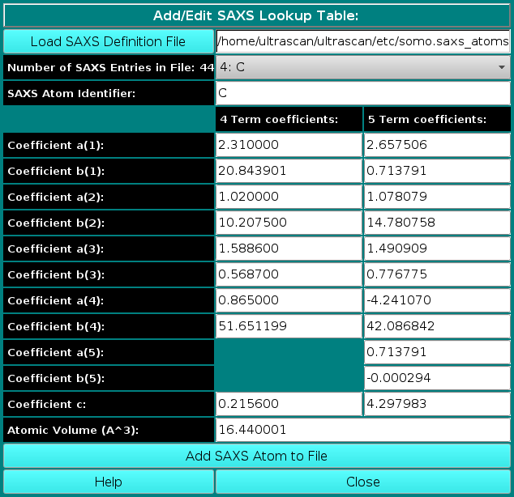

|
Manual
|
SOMO - Add/Edit SAXS Atomic Coefficients Lookup Table Module:
Last updated: January 2023

In this module, you can edit the atomic SAXS coefficients table. For each atom, the scattering factor can be approximated by a sum of either four or five Gaussians, requiring eight or ten coefficients, respectively, and a constant term. Since the five term Gaussians are not available for all atoms, we have maintained both sets of coefficients in this Table. Users can then choose which ones to apply in the US-SOMO SAS Miscellaneous Options module. The 4 term Gaussians values in the somo.saxs_atoms table are taken from the International Tables of Crystallography, while the 5 terms are from Waasmaier and Kirfel, Acta Cryst. A51:416-431, 1991; Yonekura et al., IUCrJ 5:348-353, 2018. Both sets can be edited at will.
-
A pull-down list of the entries currently present in the table can be accessed in the first field,
Number of SAXS Entries in this file. Note that the first entry "A2B" reports the scattering factors that are used for simulation of SAXS curves for AtoB grid bead models. Similarly, the entry "DAM" reports the scattering factors that are used for simulation of SAXS curves for loaded DAMMIN & DAMMIF bead models. The entry "ABB" contains the scattering factors for non-coded residues following acceptance of the "Automatic Bead Builder" function. The A2B, DAM, and ABB scattering factors are those of pure neutral carbon, used as a proxy.
-
New entries can be added by writing an identifier in the following field, SAXS Atom Identifier:.
This identifier will be carried over to the somo.hybrid and somo.atom tables,
linking their entries to the SAXS atomic coefficients in this table.
-
The coefficients are the pre-exponential factors a(i) and the exponentials b(i),
plus the constant c.
-
The last field in this panel, Atomic Volume (A^3):, is the atomic excluded volume
used to correct the scattering function, although that of the atomic groups (i.e., with the H atoms
bound) seem to be more appropriate (see Svergun et al., J. App. Cryst. 28:768-773, 1995). Indeed,
the atomic group excluded volumes can be entered in the somo.atom table (see
here), bypassing the somo.saxs_atoms value. For other atoms,
we have used values calculated from the atomic radii reported in the
knowledgedoor.com website,
where references to the original sources are also listed.
www contact: Emre Brookes
This document is part of the UltraScan Software Documentation
distribution.
Copyright © notice.
The latest version of this document can always be found at:
http://somo.aucsolutions.com
Last modified on January 12, 2023.